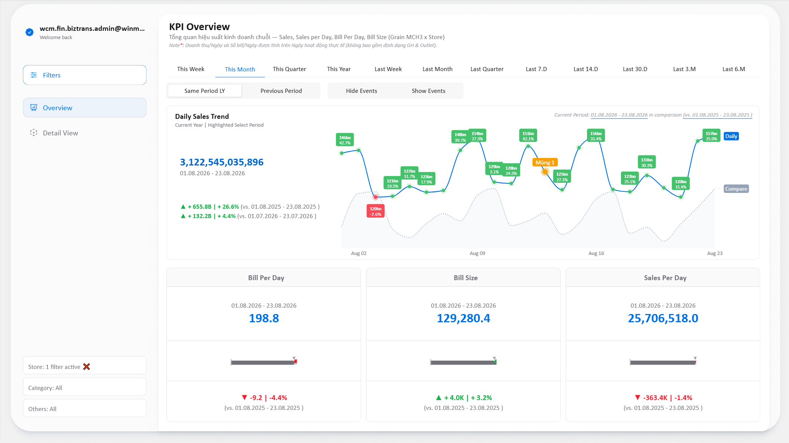
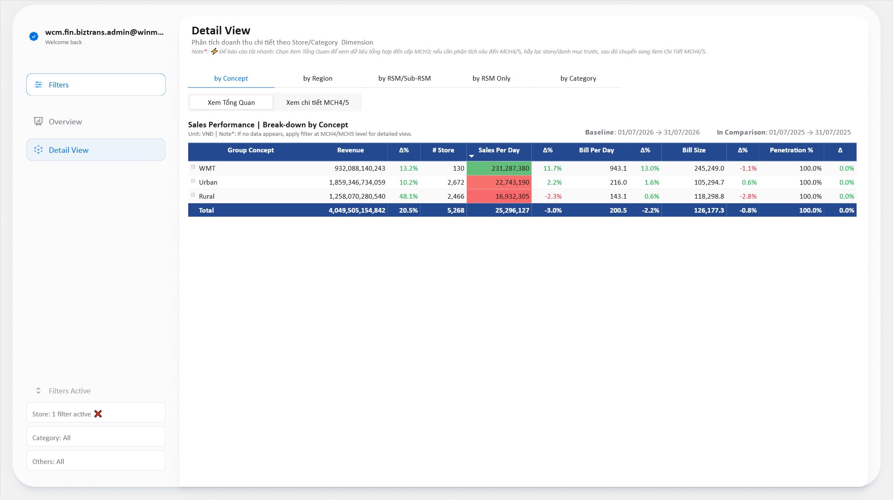
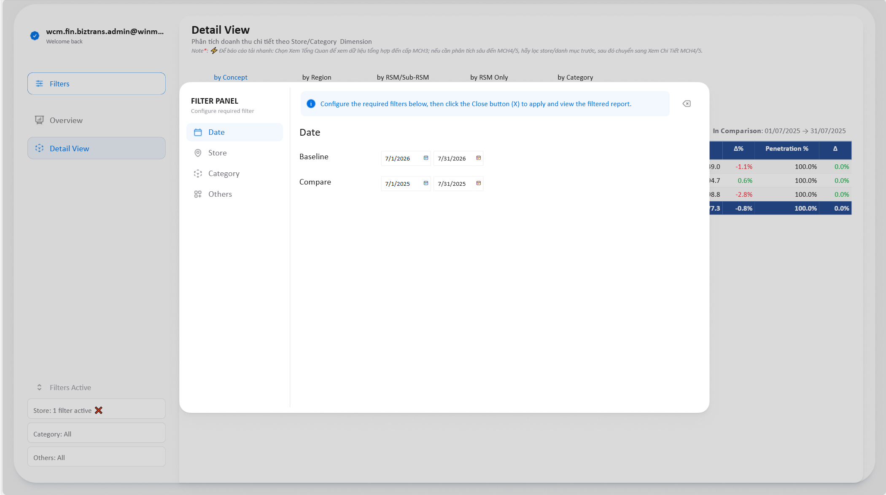
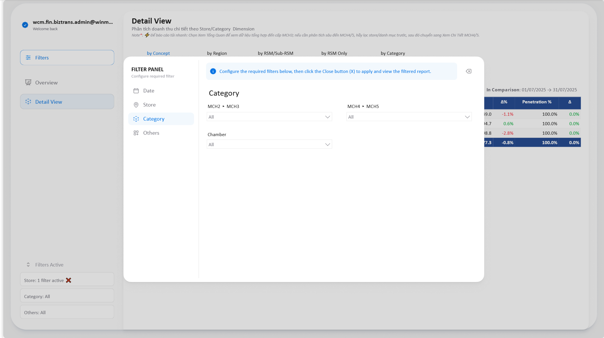

Báo cáo có 2 trang chính và 1 bảng lọc dùng chung. Luồng xem chuẩn: vào Overview để nắm xu hướng & sức khỏe chuỗi trong vài giây, rồi sang Detail View để bóc tách xuống từng cấp quản lý, từng cửa hàng, từng ngành hàng. Tài liệu này chỉ cho anh/chị bấm vào đâu, đọc số nào và tránh bẫy gì.
Báo cáo được thiết kế theo một mạch: Overview trả lời “chuỗi đang tăng hay giảm?”, còn Detail View trả lời “ai/ngành nào làm nó tăng–giảm?”. Vào thẳng Detail View mà chưa lọc gì sẽ vừa chậm vừa khó đọc.
name@winmart.masangroup.com.| Nội dung | Chi tiết |
|---|---|
| Dữ liệu | Doanh thu bán hàng của WMP & WMT, chi tiết tới MCH5 và tới từng cửa hàng. |
| Chỉ số | Doanh thu, Sales per Day, Bill per Day, Bill Size, %Penetration, %Sales Mix, số cửa hàng hoạt động. |
| Tần suất | Hằng ngày (D-1) — dữ liệu có đến hết ngày hôm qua. Ví dụ hôm nay 24/08 → báo cáo có số đến 23/08. |
| Kỳ so sánh | Mọi Δ% đều là Baseline so với Compare — hai kỳ do anh/chị tự chọn trong Filter Panel (mặc định là cùng kỳ năm trước). |
Nguyên tắc: mỗi user chỉ nhìn thấy các cửa hàng nằm trong phạm vi phụ trách của mình. Quyền được gán theo email và cập nhật theo dữ liệu nhân sự.
| Cấp | Phạm vi nhìn thấy |
|---|---|
| GĐM (Giám đốc Miền) | Toàn bộ cửa hàng thuộc chuỗi / miền phụ trách. |
| GĐV / GĐST | Các cửa hàng thuộc vùng / siêu thị phụ trách. |
| QLKV | Các cửa hàng thuộc khu vực phụ trách. |
| Category / Finance / SSC | Theo phạm vi được cấp riêng (thường là toàn quốc, giới hạn theo ngành hàng nếu có). |
Cả hai trang dùng chung một khung: thanh điều hướng bên trái, vùng nội dung bên phải, và bảng lọc bật ra khi cần.
| Khu vực | Có gì | Dùng để |
|---|---|---|
| Thanh trái — trên | Email đang đăng nhập · nút Filters · Overview · Detail View | Xác nhận đúng tài khoản; mở bảng lọc; chuyển giữa 2 trang. |
| Thanh trái — dưới | Khối Filters Active: Store · Category · Others | Xem nhanh đang lọc những gì. Bấm dấu ✖ đỏ cạnh mỗi dòng để xoá riêng nhóm lọc đó. |
| Vùng nội dung — đầu trang | Tiêu đề · mô tả · dòng Note* in nghiêng | Note* luôn ghi lưu ý quan trọng nhất của trang — đọc 1 lần trước khi dùng. |
| Vùng nội dung — thanh chuyển | Dải nút ngang ngay dưới tiêu đề | Trên Overview là chọn kỳ; trên Detail View là chọn chiều xem. |
Đây là trang mặc định khi mở báo cáo. Nó trả lời: doanh thu kỳ này bao nhiêu, tăng/giảm thế nào, và ngày nào bất thường. Dữ liệu tổng hợp ở cấp MCH3 × Store nên trang này luôn tải nhanh.

Hàng nút đầu tiên đặt kỳ Baseline chỉ bằng 1 cú bấm — không cần vào Filter Panel:
| Nhóm | Lựa chọn | Ý nghĩa |
|---|---|---|
| Kỳ đang diễn ra | This Week · This Month · This Quarter · This Year | Từ đầu tuần/tháng/quý/năm đến ngày dữ liệu mới nhất (D-1). |
| Kỳ đã đóng | Last Week · Last Month · Last Quarter | Trọn vẹn tuần/tháng/quý liền trước — dùng để chốt số. |
| Cửa sổ trượt | Last 7.D · Last 14.D · Last 30.D · Last 3.M · Last 6.M | N ngày/tháng gần nhất tính lùi từ D-1 — dùng để nhìn xu hướng, không bị méo bởi mốc đầu tháng. |
Hàng nút thứ hai quyết định mọi con số Δ% trên trang này so với cái gì:
| Nút | So với | Dùng khi |
|---|---|---|
| Same Period LY | Cùng kỳ năm ngoái | Đánh giá tăng trưởng thật, đã loại yếu tố mùa vụ (Tết, mùa nóng, mùa tựu trường…). |
| Previous Period | Kỳ liền trước cùng độ dài | Xem đà ngắn hạn: tháng này so tháng trước, tuần này so tuần trước. |
Nút Show Events gắn nhãn màu cam lên những ngày đặc biệt (ví dụ Mùng 1, ngày lễ, ngày có sự kiện thương mại). Bật lên khi thấy một ngày tăng/giảm bất thường — rất nhiều trường hợp là do lịch chứ không phải do vận hành.
| Thẻ | Trả lời câu hỏi |
|---|---|
| Bill Per Day | Lưu lượng khách — một cửa hàng bán được bao nhiêu bill mỗi ngày? Giảm = mất khách. |
| Bill Size | Giỏ hàng — mỗi bill trị giá bao nhiêu? Giảm = khách mua ít hơn / rẻ hơn. |
| Sales Per Day | Năng suất — một cửa hàng làm ra bao nhiêu doanh thu mỗi ngày? = Bill Per Day × Bill Size. |
Mỗi thẻ có 3 tầng: giá trị kỳ Baseline (kèm khoảng ngày), thanh bullet so với kỳ Compare, và dòng biến động ▲/▼ ở dưới cùng.
Một bảng ma trận duy nhất, nhưng đổi được chiều xem và đào xuống nhiều cấp. Đây là nơi trả lời “miền nào kéo tụt?”, “QLKV nào yếu?”, “ngành hàng nào mất doanh thu?”.

| Dải | Lựa chọn | Tác dụng |
|---|---|---|
| Dải 1 — Chiều xem | by Concept · by Region · by RSM/Sub-RSM · by RSM Only · by Category | Đổi trục dòng của bảng. Bảng vẫn là một, chỉ thay cách nhóm cửa hàng / sản phẩm. |
| Dải 2 — Độ sâu dữ liệu | Xem Tổng Quan · Xem chi tiết MCH4/5 | Đổi độ chi tiết ngành hàng mà báo cáo lấy số. Ảnh hưởng trực tiếp tới tốc độ. |
| Chế độ | Số được tổng hợp đến | Khi nào dùng |
|---|---|---|
| Xem Tổng Quan (mặc định) | MCH3 | Mặc định cho mọi phân tích theo cửa hàng / vùng / cấp quản lý. Nhanh. |
| Xem chi tiết MCH4/5 | MCH4 & MCH5 | Chỉ khi thật sự cần đào xuống nhóm hàng / mặt hàng con. Nặng hơn nhiều. |
Cột đầu là cấp đang xem; các cột sau đi theo cặp giá trị + Δ%. Δ% luôn là Baseline so với Compare, hai mốc ngày hiện ở góc phải trên bảng (Baseline và In Comparison).
| Cột | Ý nghĩa |
|---|---|
| Revenue | Doanh thu kỳ Baseline (VNĐ). |
| # Store | Số cửa hàng thực sự có hoạt động trong kỳ ở dòng đó. |
| Sales Per Day | Doanh thu / cửa hàng / ngày — cột công bằng nhất để so giữa các nhóm to nhỏ khác nhau. |
| Bill Per Day | Số bill / cửa hàng / ngày. |
| Bill Size | Giá trị trung bình mỗi bill. |
| Penetration % | Tỷ lệ bill có ngành hàng này trên tổng bill — độ phủ trong giỏ khách. |
| Revenue Mix (chiều by Category) | Tỷ trọng doanh thu của ngành hàng đó trên tổng. |
| Δ / Δ% | Biến động so với kỳ Compare. Với Penetration là chênh lệch điểm % (Δ), không phải % tương đối. |
Cột Sales Per Day được tô nền theo thang giá trị (đỏ → xanh) để quét mắt tìm nhóm yếu/mạnh mà không cần đọc số.
Bấm một nút trên dải chiều xem là bảng đổi trục dòng ngay. Mỗi chiều có sẵn một cây phân cấp — anh/chị đào xuống theo cây đó:
Muốn xuống MCH4 / MCH5: chuyển sang Xem chi tiết MCH4/5 và lọc ngành hàng ở Filter Panel.
Rê chuột vào góc trên bên phải của bảng, một cụm nút nhỏ sẽ hiện ra. Đây là cách đào xuống/lên toàn bảng:
| Nút | Tên trong Power BI | Làm gì |
|---|---|---|
| ↓↓ | Expand all down one level | Mở thêm một cấp cho toàn bộ bảng, và vẫn giữ dòng tổng của cấp cha. Ví dụ by Region: từ Miền → hiện Miền + Tỉnh/TP bên dưới. Đây là nút hay dùng nhất. |
| ↧ | Go to the next level | Nhảy hẳn xuống cấp kế tiếp, bỏ dòng tổng của cấp cha. Cho danh sách phẳng, gọn — ví dụ nhảy thẳng ra danh sách Tỉnh/TP, không còn dòng Miền. |
| ↑ | Drill up | Quay lên một cấp — rút gọn bảng về mức tổng hợp trước đó. |
Không phải lúc nào cũng cần mở hết. Ở cột đầu tiên, mỗi dòng có dấu ⊞ / ⊟ nhỏ bên trái:
Cách này giữ bảng gọn và chạy nhanh hơn nhiều so với mở toàn bộ bảng xuống cấp cửa hàng.
Bấm nút Filters ở thanh trái để mở. Bảng có 4 tab: Date · Store · Category · Others. Chọn xong, bấm nút ✖ (Close) góc trên bên phải bảng để đóng và áp bộ lọc.

Trên trang Overview, dải nút This Week / This Month / Last 7.D… đặt Baseline nhanh mà không cần vào tab này.
| Bộ lọc | Cấp | Ghi chú |
|---|---|---|
| Chain | WMP · WMT | Nút bấm nhanh. Không chọn = cả hai chuỗi. |
| Region | Miền → Tỉnh/TP → Quận/Huyện → Phường/Xã | Dropdown phân cấp — chọn cấp trên sẽ thu hẹp danh sách cấp dưới. |
| Rsm | GĐC → GĐM → GĐV → QLKV | Lọc theo cây quản lý vận hành. |
| Format | Concept → WiN | Định dạng cửa hàng. |
| Project | Group → Project → Detail | Lọc theo dự án cải tạo / mô hình thử nghiệm. |
| Store | Id & SAP Name | Tìm và chọn từng cửa hàng cụ thể. |
| Panel | LFL · NSO · STU… | Rất quan trọng khi so cùng kỳ: chọn LFL để loại ảnh hưởng của cửa hàng mới mở / mới đóng. |
| Store Id mass filter | Ô nhập tự do | Dán một danh sách Store ID từ Excel, cách nhau bởi dấu phẩy (1001, 1002, 1003). Dùng khi cần soi đúng một tập cửa hàng không theo cây tổ chức nào. |

| Bộ lọc | Ý nghĩa |
|---|---|
| Revenue Type | Lọc theo loại doanh thu (bán hàng thường, chương trình, v.v.). |
| Bill Type | Lọc theo loại bill (POS / B2B / SLL…). |
| Performance Tier | Xếp loại cửa hàng theo doanh thu/ngày: A ≥ 25tr · B 18–25tr · C 15–18tr · D 12–15tr · E 8–12tr · F < 8tr. Giữ Ctrl + click để chọn nhiều tier. |
Performance Tier rất hữu ích khi so sánh: các cửa hàng tier A và tier F có hành vi hoàn toàn khác nhau, gộp chung sẽ làm trung bình mất ý nghĩa.
| Cách | Kết quả |
|---|---|
| Bấm ✖ đỏ ở khối Filters Active | Xoá riêng nhóm đó (Store / Category / Others), giữ nguyên các nhóm khác. |
| Nút Reset trong Filter Panel | Đưa nhóm lọc tương ứng về mặc định. |
| Nút Reset to default của Power BI (thanh trên cùng của trình duyệt) | Đưa toàn bộ báo cáo về trạng thái gốc — dùng khi báo cáo lỗi hoặc lọc rối quá. |
| Chỉ số | Công thức | Đọc như thế nào |
|---|---|---|
| Revenue | Tổng doanh thu trong kỳ | Số tuyệt đối — chịu ảnh hưởng của độ dài kỳ và số lượng cửa hàng. |
| Operating Day | Số ngày cửa hàng thực sự hoạt động | Mẫu số của các chỉ số “per day”. Cửa hàng đóng cửa không bị tính. |
| Sales per Day | Revenue ÷ Operating Day | Doanh thu / cửa hàng / ngày. Cột so sánh công bằng nhất giữa các nhóm to nhỏ khác nhau. |
| Bill per Day | #Bill ÷ Operating Day | Số bill / cửa hàng / ngày — đại diện cho lưu lượng khách. |
| Bill Size | Revenue ÷ #Bill | Giá trị trung bình một bill — đại diện cho giỏ hàng. |
| % Sales Mix | Revenue ngành ÷ Tổng Revenue | Tỷ trọng đóng góp doanh thu của một ngành hàng. |
| % Penetration | Số bill có ngành hàng ÷ Tổng số bill | Độ phủ trong giỏ khách: cứ 100 khách thì bao nhiêu người mua ngành này. |
| # Stores | Đếm cửa hàng có hoạt động trong kỳ | Dùng để hiểu quy mô của dòng đang xem; cũng giải thích vì sao Revenue thay đổi. |
| Δ% | (Baseline − Compare) ÷ Compare | Biến động tương đối giữa hai kỳ đã chọn. |
| Δ (Penetration) | Penetration Baseline − Penetration Compare | Chênh lệch điểm %, không phải phần trăm tương đối. “+0.5%” nghĩa là tăng 0.5 điểm phần trăm. |
Sales per Day = Bill per Day × Bill Size. Doanh thu/ngày chỉ giảm vì một trong hai — ít khách hơn hoặc mỗi khách mua ít hơn. Xác định được vế nào là đã đi được nửa đường chẩn đoán.| Tình huống | Nguyên nhân thường gặp | Cách xử lý |
|---|---|---|
| Bảng Detail View trống trơn | Đang ở chế độ Xem chi tiết MCH4/5 nhưng chưa lọc MCH4/MCH5. | Vào Filter Panel → tab Category chọn MCH4/MCH5, hoặc quay về Xem Tổng Quan. |
| Báo cáo quay vòng rất lâu | Bật Xem chi tiết MCH4/5 trên toàn chuỗi, hoặc expand xuống cấp cửa hàng khi chưa lọc. | Về Xem Tổng Quan, lọc hẹp store/ngành hàng rồi mới đào sâu lại. |
| Số không khớp với đồng nghiệp | Khác phạm vi phân quyền, hoặc khác bộ lọc / khác kỳ Baseline–Compare. | Đối chiếu khối Filters Active và hai mốc Baseline / In Comparison ở góc phải bảng. |
| Δ% to bất thường | Kỳ Compare quá ngắn, hoặc nhóm cửa hàng mới mở nên kỳ trước gần như không có số. | Đặt hai kỳ cùng độ dài; lọc Panel = LFL để chỉ so cửa hàng đã hoạt động ổn định. |
| Một ngày trên biểu đồ tăng/giảm đột biến | Ngày lễ, Mùng 1, sự kiện thương mại. | Bấm Show Events trên trang Overview để kiểm tra trước khi kết luận là vấn đề vận hành. |
| Không mở được báo cáo / báo lỗi quyền | Chưa được cấp quyền, hoặc đang đăng nhập bằng email khác. | Kiểm tra email hiển thị ở góc trên bên trái. Nếu đúng email công ty mà vẫn lỗi, xem mục dưới. |
| Đã thử hết mà vẫn lỗi | — | Bấm Reset to default để đưa báo cáo về trạng thái gốc. Vẫn lỗi thì gửi email cho bộ phận phụ trách, kèm ảnh chụp màn hình lỗi. |
Việc cấp quyền cần có email phê duyệt của cấp quản lý trực tiếp. Gửi email tới bộ phận phụ trách báo cáo kèm: họ tên, email công ty, chức danh, phạm vi cần xem, và email phê duyệt.